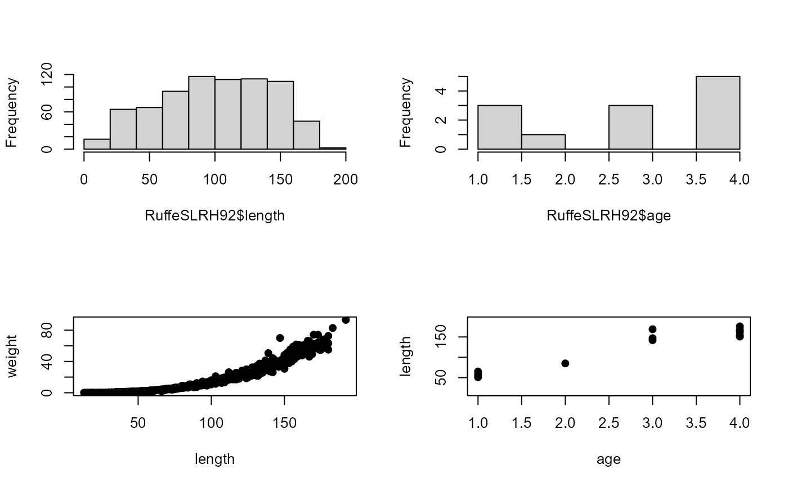

Biological data for Ruffe captured from the St. Louis River in 1992.
Source:R/RuffeSLRH92.R
RuffeSLRH92.RdBiological data for Ruffe (Gymnocephalus cernuus) captured in the St. Louis River, Lake Superior in 1992.
Format
A data frame of 738 observations on the following 11 variables:
- fish.id
A unique fish identification number (across all years, most of which are not shown in this file
- month
Month (numeric) of capture
- day
Day of capture
- year
Year of capture
- indiv
A unique fish identification number within the year
- location
Grid location of capture
- length
Total length (mm)
- weight
Weight (g)
- sex
Sex factor (
female,male, orunknown)- maturity
Maturity stage factor (
developing,immature,mature,nearly.ripe,nearly.spent,recovering,ripe,running,spent,unknown, oryoy)- age
Age (yrs) from scales
Source
personal collection by the United States Geological Survey, Lake Superior Biological Station, Ashland, WI. CSV file
Examples
data(RuffeSLRH92)
str(RuffeSLRH92)
#> 'data.frame': 738 obs. of 11 variables:
#> $ fish.id : num 1992 1992 1992 1992 1992 ...
#> $ month : int 4 4 4 4 4 4 4 4 4 4 ...
#> $ day : int 23 23 23 23 23 23 23 23 23 23 ...
#> $ year : int 1992 1992 1992 1992 1992 1992 1992 1992 1992 1992 ...
#> $ indiv : int 1 2 3 4 5 6 7 8 9 10 ...
#> $ location: int 160170 160170 160170 160170 160170 160170 160170 160170 160170 160170 ...
#> $ length : int 90 128 112 68 56 58 111 111 115 65 ...
#> $ weight : num 9.3 32.5 19 4.4 2.1 2.8 16.1 17.9 22.7 3.4 ...
#> $ sex : Factor w/ 3 levels "female","male",..: 2 1 2 2 3 2 2 2 2 1 ...
#> $ maturity: Factor w/ 11 levels "developing","immature",..: 7 7 7 7 10 7 7 7 7 2 ...
#> $ age : int NA NA NA NA NA NA NA NA NA 1 ...
head(RuffeSLRH92)
#> fish.id month day year indiv location length weight sex maturity age
#> 1 1992.000 4 23 1992 1 160170 90 9.3 male ripe NA
#> 2 1992.000 4 23 1992 2 160170 128 32.5 female ripe NA
#> 3 1992.000 4 23 1992 3 160170 112 19.0 male ripe NA
#> 4 1992.000 4 23 1992 4 160170 68 4.4 male ripe NA
#> 5 1992.001 4 23 1992 5 160170 56 2.1 unknown unknown NA
#> 6 1992.001 4 23 1992 6 160170 58 2.8 male ripe NA
op <- par(mfrow=c(2,2),pch=19)
hist(RuffeSLRH92$length,main="")
hist(RuffeSLRH92$age,main="")
plot(weight~length,data=RuffeSLRH92)
plot(length~age,data=RuffeSLRH92)

par(op)
xtabs(~age,data=RuffeSLRH92)
#> age
#> 1 2 3 4
#> 3 1 3 5
xtabs(~sex,data=RuffeSLRH92)
#> sex
#> female male unknown
#> 407 201 130
tmp <- c("yoy","immature","developing","mature","nearly.ripe","ripe",
"running","nearly.spent","spent","recovering","unknown")
RuffeSLRH92$maturity <- ordered(RuffeSLRH92$maturity,levels=tmp)
xtabs(~maturity,data=RuffeSLRH92)
#> maturity
#> yoy immature developing mature nearly.ripe ripe
#> 98 28 129 9 22 170
#> running nearly.spent spent recovering unknown
#> 30 57 125 36 34
xtabs(~maturity+month+sex,data=RuffeSLRH92)
#> , , sex = female
#>
#> month
#> maturity 4 5 6 7 8 9 10
#> yoy 0 0 0 0 0 0 0
#> immature 3 2 5 0 0 3 10
#> developing 0 0 7 3 2 65 23
#> mature 0 0 0 0 0 0 2
#> nearly.ripe 0 0 0 0 0 0 1
#> ripe 27 33 47 0 0 0 0
#> running 0 0 13 0 0 0 0
#> nearly.spent 0 0 32 10 1 0 0
#> spent 0 0 10 70 11 0 0
#> recovering 0 0 0 12 14 0 0
#> unknown 0 0 0 1 0 0 0
#>
#> , , sex = male
#>
#> month
#> maturity 4 5 6 7 8 9 10
#> yoy 0 0 0 0 0 0 0
#> immature 0 2 2 0 0 0 1
#> developing 0 0 0 0 1 27 1
#> mature 1 3 0 0 0 0 1
#> nearly.ripe 0 0 0 0 0 10 11
#> ripe 29 25 9 0 0 0 0
#> running 0 0 5 0 0 1 11
#> nearly.spent 0 0 10 4 0 0 0
#> spent 0 0 12 15 7 0 0
#> recovering 0 0 0 0 10 0 0
#> unknown 0 1 0 1 0 1 0
#>
#> , , sex = unknown
#>
#> month
#> maturity 4 5 6 7 8 9 10
#> yoy 0 0 0 61 32 5 0
#> immature 0 0 0 0 0 0 0
#> developing 0 0 0 0 0 0 0
#> mature 1 0 1 0 0 0 0
#> nearly.ripe 0 0 0 0 0 0 0
#> ripe 0 0 0 0 0 0 0
#> running 0 0 0 0 0 0 0
#> nearly.spent 0 0 0 0 0 0 0
#> spent 0 0 0 0 0 0 0
#> recovering 0 0 0 0 0 0 0
#> unknown 1 0 1 5 1 14 8
#>